YummyDiary「Everyday NABE Diary」
- 25/5/7
- 25/5/8
- 25/5/9
- 25/5/11
- 25/5/12
- 25/5/14
- 52/5/16
- 25/5/17
- 25/5/18
- 25/5/21
- 25/5/22
- 25/6/5
- 25/6/6
- 25/6/12
- 25/6/16
- 25/6/17
- 25/6/17
- 25/6/18
- 25/6/20
- 25/6/20
- 25/6/23
- 25/6/24
- 25/6/24
- 25/7/1
- 25/7/3
- 25/7/4
- 25/7/7
- 25/7/8
- 25/7/8
- 25/7/9
- 25/7/9
- 25/7/16
- 25/7/21
- 25/8/3
- 25/8/5
- 25/8/9
- 25/8/12
- 25/8/13
- 25/8/15
- 25/8/16
- 25/8/19
- 25/8/28
- 25/8/30
- 25/8/31
- 25/9/1
- 25/9/3
- 25/9/4
- 25/9/5
- 25/9/5
- 25/9/6
- 25/9/10
- 25/9/11
- 25/9/12
- 25/9/14
- 25/9/19
- 25/9/28
- 25/10/1
- 25/10/7
- 25/10/8
- 25/10/8
- 25/10/9
- 25/10/10
- 25/10/10
- 25/10/14
- 25/10/22
- 25/10/23
- 25/10/24
- 25/10/28
- 25/10/30
- Sesame Soy Milk Nabe Soup Base (Mizkan)
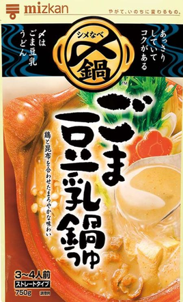
- Sesame Soy Milk Nabe Soup Base (Mizkan)
- Akakara (Ichibiki)
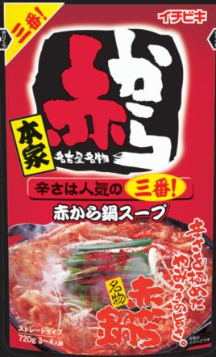
- Akakara (Ichibiki)
- Akakara (Ichibiki)
- Sundubu Jjigae (S&B)
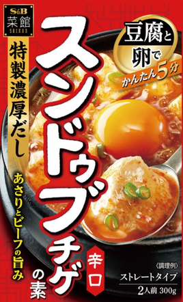
- Kimchi Nabe Soup Base (Ebara: 300ml)
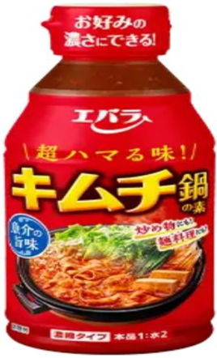
- Kimchi Nabe Soup Base (Ebara)
- Kimchi Nabe Soup Base (Ebara)
- Kimchi Nabe Soup Base (Ebara)
- Kimchi Nabe Soup Base (Ebara)
- Sundubu Jjigae Base (Marudai Foods)
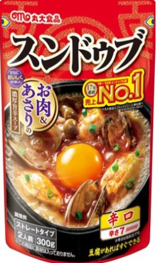
- Sundubu Jjigae Base (Marudai Foods)
- Mizkan Lovers Spicy Umami Sauce
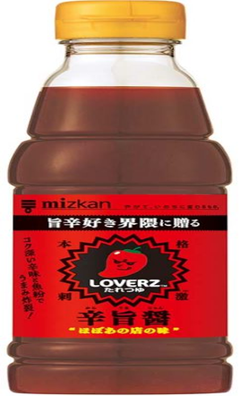
- Mizkan Lovers Spicy Umami Sauce
- Mizkan Lovers Spicy Umami Sauce
- Mizkan Lovers Spicy Umami Sauce
- Mizkan Lovers Spicy Umami Sauce
- Mizkan Lovers Spicy Umami Sauce
- Chicken Dashi Umashio 7-pack (Ajinomoto)
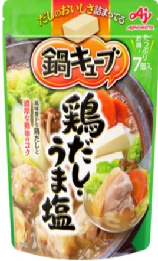
- Tonkotsu Soy Sauce (Mizkan)
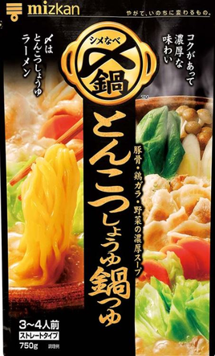
- Tonkotsu Soy Sauce (Mizkan)
- Tonkotsu Soy Sauce (Mizkan)
- Pork Miso (Ichibiki)
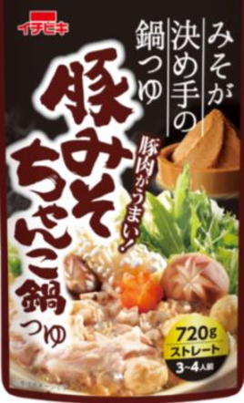
- Pork Miso (Ichibiki)
- Tonkotsu Soy Sauce (Mizkan)
- Akakara (Ichibiki)
- Akakara (Ichibiki)
- Gifu Tanmen Supervised Salt Tanmen Nabe Soup (Sugakiya)
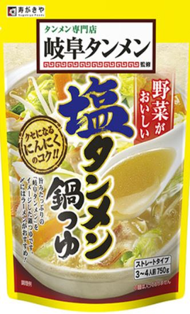
- Gifu Tanmen Supervised Salt Tanmen Nabe Soup (Sugakiya)
- Jidori Dashi Salt Nabe Soup (Yamaki)
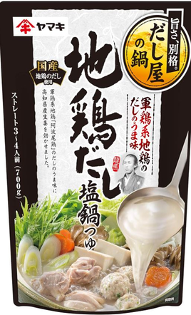
- Puchitto Nabe Tantan Goma Nabe 40g x4 (Ebara)
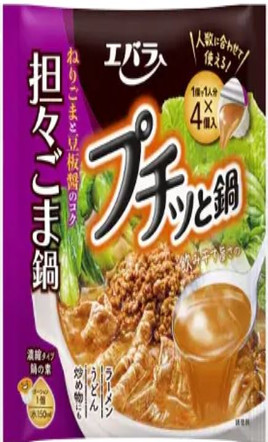
- Grilled Flying Fish Broth Hot Pot Soup (Mizkan)
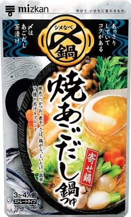
- SUGAKIYA Japanese-style Tonkotsu Hot Pot Soup (Sugakiya)
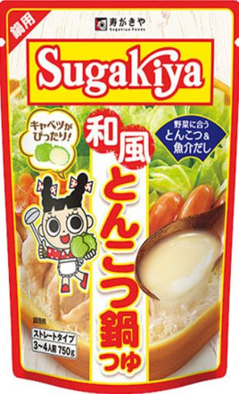
- SUGAKIYA Japanese-style Tonkotsu Hot Pot Soup (Sugakiya)
- Samgyetang Soup Base (S&B)
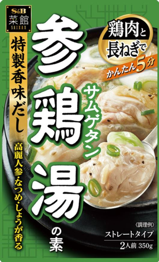
- Kimchi Hot Pot Soup Base (Ichibiki)
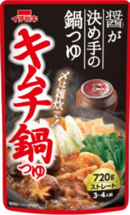
- Kimchi Hot Pot Soup Base (Ichibiki)
- Yosenabe Soup Base (Ichibiki)
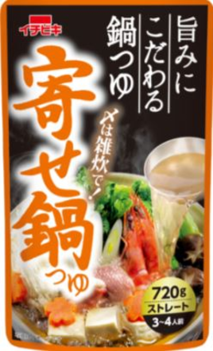
- Yosenabe Soup Base (Ichibiki)
- Sesame Soy Milk Hot Pot Soup (Mizkan)
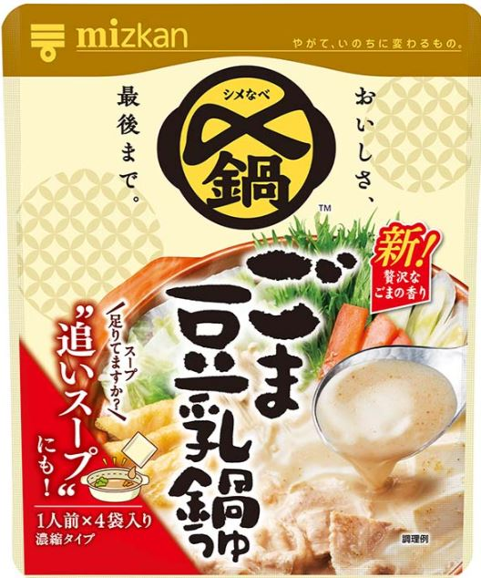
- Sesame Soy Milk Hot Pot Soup (Mizkan)
- Sesame Soy Milk Hot Pot Soup (Mizkan)
- Sesame Soy Milk Hot Pot Soup (Mizkan)
- Sesame Soy Milk Hot Pot Soup (Mizkan)
- Akakara (Mizkan)
(4 small packs)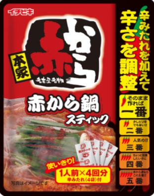
- Akakara (Mizkan)
(4 small packs)
- Champon (Itsuki Foods)
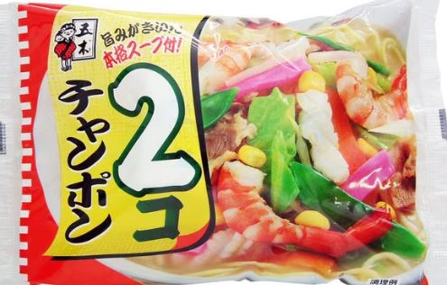
- Akakara (Mizkan)
(4 small packs)
- Akakara (Mizkan)
(4 small packs)
- Champon (kano japan)
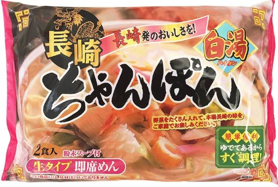
- Kimuchi Nabe(Mizkan)
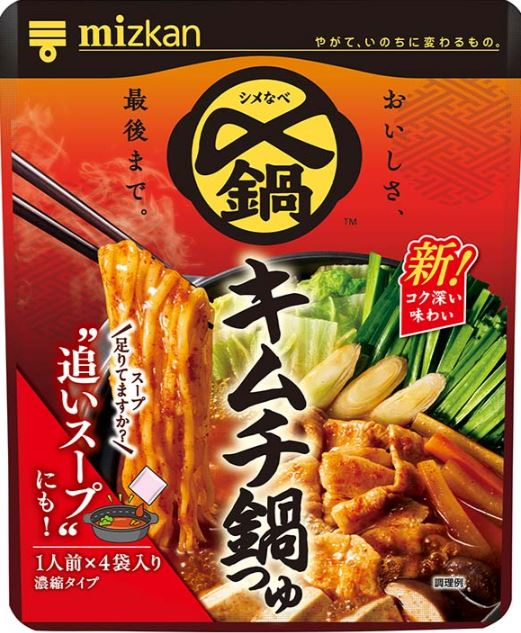
- Kimuchi Nabe(Mizkan)
- Kimuchi Nabe(Mizkan)
- Kimuchi Nabe(Mizkan)
- Ippudo (Zensho)
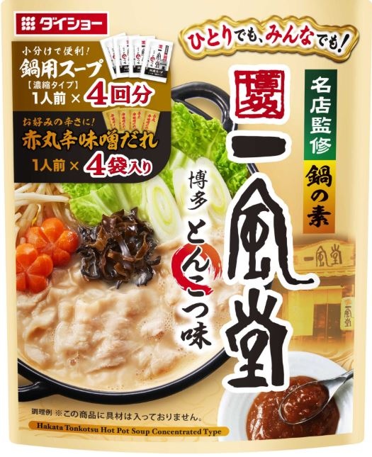
- Ippudo (Zensho)
- Ippudo (Zensho)
- Champon (Itsuki Foods)
- Ippudo (Zensho)
- Grilled Flying Fish Broth Hot Pot Soup (Mizkan_4pac)
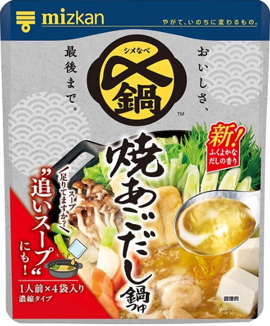
- Grilled Flying Fish Broth Hot Pot Soup (Mizkan_4pac)
- Champon (Itsuki Foods)
- Grilled Flying Fish Broth Hot Pot Soup (Mizkan_4pac)
- Grilled Flying Fish Broth Hot Pot Soup (Mizkan_4pac)
- Rich Miso (Mizkan)
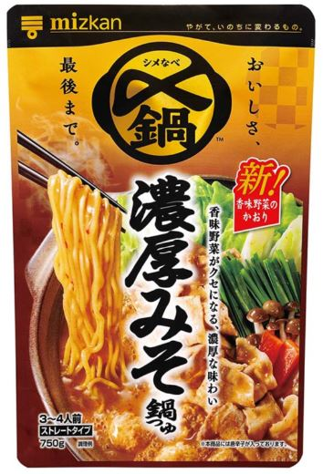
- Rich Miso (Mizkan)
- Saigo Hot Pot Soup – Black Pork Soy Sauce (Yamaki)
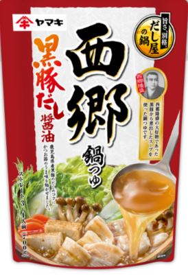
- Saigo Hot Pot Soup – Black Pork Soy Sauce (Yamaki)
-
Green onion × Cabbage × Tofu
→ ★★★★ (4.0)
-
Green onion × Cabbage × Tofu
→ ★★★★ (4.0)
-
Green onion × Cabbage × Tofu
→ ★★★★⋆ (4.5)
-
Leftovers (Green onion, Cabbage, Tofu) + Yakisoba
→ ★★★★ (4.0)
-
Heavy leftovers (Almost none of the right items: Green onion, Cabbage, Tofu)
→ ★★★⋆ (3.5)
-
Green onion ×× Tofu
→ ★★★⋆ (3.5)
Added raw egg
→ ★★★⋆ (3.5)
-
Green onion × Cabbage × Tofu
→ ★★★⋆ (3.5)
-
Evening: Green onion × Cabbage × Tofu
→ ★★★⋆ (3.5)
Night: Tofu × Yakisoba
→ ★★★ (3.0)
-
Green onion × Cabbage
→ ★★★⋆ (3.5)
-
Tofu only
→ ★★★⋆ (3.5)
-
Tofu × Yakisoba
→ ★★★⋆ (3.5)
-
Tofu
→ ★★★⋆ (3.5)
-
Tofu × Yakisoba
→ ★★★⋆ (3.5)
-
Tofu × Yakisoba
→ ★★★⋆ (3.5)
-
Green onion × Yakisoba
→ ★★★★ (4.0) – Served as abura soba (oil noodles) until soup evaporates
-
Green onion × Yakisoba
→ ★★★⋆ (3.5) – Served as ramen
-
Tofu × Yakisoba
→ ★★★⋆ (3.5) – Served as ramen
-
Green onion × Yakisoba
→ ★★★★ (4.0) – Served as abura soba (oil noodles) until soup evaporates
-
Green onion × Tofu
→ ★★★⋆ (3.5) – As hotpot
-
Green onion × Tofu
→ ★ (1.0)
-
Green onion × Yakisoba
→ ★★★★ (4.0)
-
Tofu
→ ★★★ (3.0)
-
Green onion × Lettuce
→ ★★★⋆ (3.5)
-
Green onion × Yakisoba
→ ★★★ (3.0)
-
Green onion × Shimeji mushrooms
→ ★★★⋆ (3.5)
-
Green onion × Cabbage × Tofu × Shimeji mushrooms
→ ★★★⋆ (3.5)
Added Yakisoba
→ ★★★ (3.0)
-
Green onion × Chinese cabbage × Tofu
→ ★★★★ (4.0)
-
(Green onion × Chinese cabbage × Tofu) + Udon
→ ★★★★⋆ (4.5)
-
Green onion × Chinese cabbage × Tofu
→ ★★★⋆ (3.5)
+ Udon
→ ★★★⋆ (3.5)
-
Green onion × Chinese cabbage × Tofu
→ ★★★⋆ (3.5)
+ Udon
→ ★★★⋆ (3.5)
-
Chinese cabbage × Tofu
→ ★★★⋆ (3.5)
Added Yakisoba
→ ★★★⋆ (3.5)
-
Green onion × Udon
→ ★★ (2.0)
-
Green onions × Tofu × Cabbage × Shimeji mushrooms
→ ★★★⋆ (3.5)
Udon noodles added
→ ★★★ (3.0)
-
lunch：Green onions × Tofu × Cabbage
→ ★★★⋆ (3.5)
evening：Add Yakisoba（to be ramen）
→ ★★★⋆ (3.5)
-
Green onions × Tofu × Cabbage
→★ (1.0)
-
Green Onion × Tofu
→ ★★★⋆ (3.5)
Add rice to make Gukbap (Korean rice soup)
→ ★★★⋆ (3.5)
-
Tofu × Shimeji Mushrooms
→ ★★★ (3.0)
Add rice to make soup rice (Kuppa)
→ ★★★ (3.0)
-
Green Onion × Shimeji Mushrooms
→ ★★ (2.0)
-
Tofu × Green Onion × Shimeji Mushrooms
→ ★★★⋆ (3.5) *Possibly 4.0, under review*
Rice Porridge
→ ★★★⋆ (3.5) *Possibly 4.0, under review*
-
(Remaining soup from Tofu × Green Onion × Shimeji Mushrooms) × Add Udon
→ ★★★⋆ (3.5)
-
Tofu × Green Onion × Yakisoba
→★★★⋆ (3.5)
-
Tofu
→★★★★ (4.0)
Zosui
→★★★⋆ (3.5)
-
Tofu only
→★★★⋆ (3.5)
-
Tofu only
→★★★⋆ (3.5)
-
Tofu × Green onion
→ ★★★★ (4.0)
Rice porridge (Tofu × Green onion)
→ ★★★★ (4.0)
-
Tofu × Green Onion (Spicy Level 5)
→ ★★★★⋆ (4.5)
Added Rice → Gukbap (Spicy Level 5)
→ ★★★★⋆ (4.5)
-
Tofu × Green Onion × Yakisoba (Spicy Level 5)
→ ★★★★ (4.0)
Green Onion × Shimeji × Udon (Spicy Level 5)
→ ★★★★ (4.0)
-
Seafood × Oil _ Small Pot (Futomi Shoji – Value Seafood Mix)
※ Instead of a frying pan, add oil to a small pot and put in the seafood. Let it cook/steam gently.
→ ★★★★ (4.0)
-
Tofu × Green onion
→ ★★★★ (4.0)
-
(The very small leftover of tofu × green onion (spicy level 5)) × yakisoba
→ ★★★⋆ (3.5)
-
Seafood × Oil _ Small Pot (Futomi Shoji – Value Seafood Mix)
→ ★★★⋆(3.5)
-
Tofu × Yakisoba
→ ★★★ (3.0)
-
Tofu
→ ★★★ (3.0)
Zosui
→ ★★★ (3.0)
-
Tofu
→ ★★★ (3.0)
Added Rice → Gukbap
→ ★★★ (3.0)
-
Tofu
→ ★★★⋆ (3.5)
-
Tofu × Green onion
→ ★★★⋆ (3.5) (with and without spiciness)
*Without spice: 3.5. With spice: 3.5 (within the 3.5 range, the spicy version tastes better).*
-
Tofu × Green onion
→ ★★★⋆ (3.5) (with and without spiciness)
*Without spice: 3.5. With spice: 3.5 (within the 3.5 range, the spicy version tastes better).*
-
Tofu × Green onion
→ ★★★⋆ (3.5) (spicy version only)
*Ate it all with spice from start to finish.*
-
Seafood × Oil _ Small Pot (Futomi Shoji – Value Seafood Mix)
※ Instead of a frying pan, add oil to a small pot and put in the seafood. Let it cook/steam gently.
→ ★★★★ (4.0)
-
Yakisoba×Tofu × Green onion
→★★★⋆ (3.5) (spicy version)
→★★★ (3.0)（not spicy）
-
Tofu × Green onion
→ ★★★⋆ (3.5)
-
Tofu × Yakisoba
→ ★★★⋆ (3.5)
-
Seafood × Oil _ Small Pot (Futomi Shoji – Value Seafood Mix)
※ Instead of a frying pan, add oil to a small pot and put in the seafood. Let it cook/steam gently.
→ ★★★★ (4.0)
-
Tofu
→ ★★★★ (4.0)
-
Tofu
→ ★★★⋆ (3.5)
-
chinese noodles（meijo food）
→ ★★★★(4.0)
Gukbap
→ ★★★★(4.0)
-
chinese noodles（meijo food）
→ ★★★★(4.0)
-
Tofu×shimeji
→ ★★★⋆ (3.5)
-
Tofu×shimeji
→ ★★★ (3.0)
- Delicious. A comforting flavor.
- Added tofu — it was delicious.
Soothing taste. Might be the best in this genre.
- Akakara is seriously tasty.
- Add yakisoba and it becomes ramen. Tasty.
- Ate it as leftover vegetable soup.
- Better without raw egg. Adding egg softens the spiciness. Kept it simple with tofu and green onion. Just plain good.
- Thought I used 100ml of soup base, but maybe it was only 50ml.
Ate kimchi hotpot from 5/16 to 5/22, but the numbers don't add up lol.
Since it's 1:2 with water, 300ml of soup base makes 900ml total (base 300 + water 600).
- Ate it twice, in the evening and at night. Added yakisoba at night.
Was on a phone call while eating, so couldn't focus on the taste.
Yeah, gotta focus when eating.
- Added cabbage and green onion. Ate it as soup.
Didn't cook rice — tragic.
Hotpot should definitely be eaten with rice.
Obviously. No rice = game over...
- Just added tofu. Pretty tasty.
If it's just tofu, no need for cutting board or knife.
So easy. Break the tofu with chopsticks.
- Added tofu and yakisoba to make ramen.
30-yen yakisoba turns into ramen. Pretty good.
No cutting board or knife needed — broke tofu with chopsticks.
Super easy.
- Just plain good. Doesn't quite feel like No.1 though.
- Pretty good. Better than Ebara (kimchi hotpot) with yakisoba.
- Not bad at all.
- So damn good. Seriously delicious — like abura soba from a shop.
Green onion × yakisoba is all you need.
Green onion alone is insanely tasty. With yakisoba = super win.
Haven’t had something this good in a while. Solid 4.0. Want it again.
Also, the noodles are great.
Key point: heat until all the soup is gone.
- Pretty good. Feels like ramen.
If the soup remains, it's ramen.
- Not bad at all.
- 4.0 — Got it!!! Eureka!!
Heat it until all the soup is gone = insanely good 4.0.
If soup remains, it's ramen = 3.5.
- Ate it as hotpot. Just plain good.
- Ate it late at night. Smell was awful. Got dragged in by a terrible smell.
Worst. 1.0. Disgusting.
Made zosui (rice porridge) for the first time.
Started as 3.5 — “Hey, not bad?”
Then gradually dropped to 2.0.
Never want to eat this again.
This was terrible. Smell really is critical.
- It was insanely delicious — 4.0.
Wrote "Godly" in my notes.
(Mistake: Poured 500ml into a new PET bottle → next day noticed the error.
It changed the flavor. Something tasted off.)
- 3.0. Feels worse than yesterday. Something’s off.
Maybe because I left it in a PET bottle in a hot room.
Tastes bad. Definitely off.
- The taste really has dropped.
Even though I boiled it properly. Hmm...
Something feels wrong.
- Felt kinda heavy.
- Hotpot was 3.5. Made zosui afterward — 3.5 with egg.
Maybe next time it'll be 4.0.
- Hotpot is 3.5.
When I added yakisoba, it felt heavy — 3.0.
The very first time I tried yakisoba with it, it was 4.0 though.
Not sure why the difference.
- Delicious. As expected.
- 4.5. This is good!!
Adding udon makes it even better!!!
Seriously delicious.
- Tasty — 3.5.
Maybe even 4.0 level.
The vegetables are great!
Just like the packaging says — the veggies shine.
- Added extra tofu. Tasty.
Tofu’s really good.
Might even be a 4.0.
- Just plain good — 3.5.
Up to the tofu and Chinese cabbage, it was good.
Then added old chicken = tasted awful.
Rotten chicken = never again.
Also, Chinese cabbage core = awful.
Lesson learned.
- Not tasty. Weird smell too. Might be the cube itself that tastes bad.
- pretty good. Adding udon changes the flavor in a bad way, so it's better not to add it. I'd like to try it as ochazuke next time — the back of the package recommends it. Udon doesn't seem to be welcome.
- It's pretty good. The ramen with yakisoba added might be rated 4.0. Under review.
- I made it on 8/3 and ate it on 8/5 — the flavor had totally changed (probably because I chilled it and left it out. Oh my god, I learned my lesson.)
- Such a mysterious product. At first, no matter how many bites I take, I think, “Yeah, this is a 3.0.”
But when I add green onion and tofu to the hot pot soup base and eat the whole thing, I’m like, “Huh? Wait… this is actually a 3.5.” Then, “Hmm… I might actually buy this again.”
Usually with hot pot soup bases, there’s a moment when they give off an unpleasant taste, but with this one, there’s absolutely none of that. Amazing. Seriously, that’s impressive.
I ended up finishing the entire thing in one meal. Maybe eating it with just tofu and green onion is a stroke of genius. Somehow, I could just keep eating until the end.
There really aren’t many products like this. It’s almost like it’s asking me, “Is your sense of taste okay? You always go for strong flavors, but can you appreciate mine?”
It feels like a kind of challenge. Honestly, I’ll probably buy it again. The fact that it never gets tiring to eat is insane — that’s seriously impressive.
It might also be amazing when you’ve got a cold. And it feels like something you could eat every day without getting tired of it.
Plus, eating it somehow makes me feel naturally energized.
I ended up eating the whole thing… and it’s rare for me to finish everything in one sitting.
- normal.
- not tasty
- Delicious. Both the hot pot and the rice porridge could easily be a 4.0. Definitely close to a 4.0. Still reviewing whether it’s truly a 4.0 (something I could recommend to my past self and want to eat again). I’ll probably buy it again. The gap between “just tasty” (3.5) and “want to eat again” (4.0) is huge, but this might be crossing that line. For now, marking it as 3.5.
- The udon is simply tasty too.
- It tastes pretty good, but maybe the small packs are not as good as the big one. There’s also a theory that it just didn’t go well with the yakisoba noodles.
- Just tofu was delicious. 4.0. I want to eat it again. I didn’t cut the tofu on a cutting board, but broke it with chopsticks—made cooking easy. A genius idea. The rice porridge was also tasty. About 3.5, but still at the level where I’d want to eat it again (I kind of crave that porridge again).
But for now, I’ll give it 3.5. I made the soup a bit too little, then added egg and rice. Next time I should leave more broth. I drank too much of it, lol.
-
Since I was talking with someone while eating, I couldn’t really focus on the taste. But it was pretty good.
-
Pretty good. Ate the leftover from the hot pot (one pack portion) on 25/8/30.
-
Delicious!!! Feels like happiness. Tofu and green onions are really tasty—solid 4.0. I want to eat it again. The tofu and green onion rice porridge is seriously amazing too, also a 4.0!! (Whisk the egg properly, add rice, and heat the pot while stirring with cooking chopsticks—it makes it even better, prevents burning, and makes cleaning easier.) Both the hot pot and the porridge are something I can confidently recommend to my past self. I’ll definitely buy this again. Tofu and green onion is a hit!!!
-
Seriously insanely delicious!! Pure genius.
I could totally recommend this to my past self. The small packs are great too, very convenient.
Super simple with just green onion and tofu — absolutely amazing!! A total beast.
-
So good!! I added more tofu and yakisoba to the leftover hot pot from 25/9/3 (with tofu and green onion). Tasted great.udon is good
-
This is the ultimate way to cook it. No need to bother washing a frying pan—just use a small pot.
Pour in oil (a decent amount, not too little—better a bit more). Then throw in the seafood.
Be sure to cover it with a lid and let it gently cook/steam.
After that, add 300 ml of water, bring it to a boil, add the seasoning powder, bring to a boil again, then add the noodles and eat in 2 minutes.
Champon × My Ingredients × My Cooking Style = ★★★★ (4.0).
The key is the amount of oil and the steaming. When I used way less oil, it wasn’t as good as the ultimate method.
Seriously delicious!! Tastes like it could end wars!!! The soup is amazing. I’ll keep an eye on Itsuki Foods.
- good.Today is 4.0
-
Kinugasa Seimen noodles are seriously delicious!! The flavor lingers.
I used just the tiny leftover soup from the hot pot I made on 25/9/5, so there wasn’t nearly enough broth, but it was still tasty.
Still, I’d say it’s about a 3.5. The noodles left a lasting flavor in my mouth, but the broth was way too little—needs further evaluation.
For now, 3.5. Might even deserve a 4.0 though.
- pretty good
- normal
- normal. aftertaste is not good.
- normal. aftertaste is not good.
- Pretty good.
- 3.5. Pretty good.
- 3.5. Pretty good.
- 3.5. Pretty good. *It might be 4.0 next time, but if Mitsukan’s hot pot base costs 300 yen, this Zensho one is around 400 yen—about 100 yen more, which is a drawback.*
- So good. Tastes like happiness. It’s really easy to make.
① Add some oil to a small pot.
② Put in frozen seafood.
③ Cover with a lid and heat.
④ Add 300ml of water and the seasoning powder.
⑤ Once it boils, add the noodles and cook for 1 and a half minutes — done!
Seriously delicious. 4.0. I want to eat it again!
- spicy is 3.5. normal is 3.0
- 3.5.
- 3.5.I may think 4.0
- 4.0 but squid is not delicious
- 4.0.
- pretty good.
- 4.0. It tastes like a hokkaido ramen
- 4.0. tastes is a littel bad because it opend on 25/10/23.
- pretty good.
- 3.0.I cooked soup on 10/28. I ate the rest of 10/28 on 10/30.so it tastes a little bad than on 10/28.
- 1st time
- 2nd time (Soy Milk Base: Finished 1 portion)
- 1st time
- 2nd time
- 3rd time (Akakara Base: Finished 1 portion)
- 1st time (Sundubu Jjigae Base: Finished 1 portion)
- 1st time_ I think I used 100ml of base, but the calculation doesn’t add up. Maybe it was 50ml. Strange. It must be the work of a yokai. I thought I was going to use 150ml, but I ended up using 100ml. Peculiar.
- 2nd time_ Used 50ml of base × 2 = 100ml
- 3rd time_ Used 50ml of base
- 4th time_ Used 50ml of base
- 5th time_ Used 50ml of base (Kimchi Hot Pot Base 300ml: Finished 1 portion)
- 1st time
- 2nd time
- 1st time_ Base 50ml + Water 100ml
- 2nd time_ Base 50ml + Water 100ml
- 3rd time_ Base 50ml + Water 100ml
- 4th time_ Base 50ml + Water 100ml
- 5th time_ Base 50ml + Water 100ml
- 6th time_ Base 140ml + Water 280ml (Used all of the base)
- 1st time_ Used 2 cubes (Water 360ml) → It was too bad, so discontinued
- 1st time_ Base 250ml
- 2nd time_ Base 150ml
- 2nd time_ Base 350ml (Used all of the base)
- 1st time_ Base 250ml
- 2nd time_ Base 460ml (Used all of the base)
- 1st time_ Used all of the base
- 1st time_ Used all of the base
- 2nd time
- 1st time_ Used all of the base
- 2nd time
- 1st time_ Used all of the base
- 1st time_ Used 1 cube (Water 150ml) → Not tasty, won’t eat again
- 1st time – used all of the soup base
- 1st time – used all of the soup base
- Second time — the leftover hot pot from 8/3 had gone bad over time, so I had to throw it away...
- 1st time (used the entire soup base)
- 1st time (use 400ml of the base)
- 2nd time (use 320ml of the base – finishing the entire 720ml kimchi hot pot soup base)
- 1st time
- 2nd time (used up all the soup base)
- 1st time
- 2nd time（2 packs left）
- 3rd time _ Used one small pack
- 4th time _ Used the leftover from one small pack (25/8/30)
- 5th time _ Used one small pack (finished all 4 packs)
- 1st time _ Using 2 small packs now
- 2nd time _ Finished 2 small packs (2 packs left).Also used one small pack (1 pack left).
-
(* Came up with this after making it about three times myself)
From here, I’ll count 9/5/25 as the first try. (1st time)
- 3rd time _ useing one small pack.
-
4th time _ Used up the soup I made on 25/9/5. (That finishes all 4 packs.) (Akakara base: 1 full set completed)
- 1st time _ Ate one pack on 25/9/10 (1st time)
- 1st time _ Ate one pack on 25/9/11 (1st time)
- 2nd time _ Ate one pack on 25/9/12 (2nd time)
- 3rd time _ Ate one pack on 25/9/14 (3rd time)
- 4th time _ Ate one pack on 25/9/19. I finished using 4pac (4th time)
- 1st time — Ate one pack on 2025/9/28.
- 2nd time — Ate one pack on 2025/10/1.
- 3rd time — Ate one pack on 2025/10/7.
- Ate one pack on 2025/10/8.
- 4th time — Ate one pack on 2025/10/8. I finished using 4 pac
- 1st time — Ate one pack on 2025/10/9.
- 2nd time — Ate one pack on 2025/10/10.
- Ate one pack on 2025/10/10.（3rd time-ituski food）
- 3rd time — Ate one pack on 2025/10/14.
- 4th time — Ate one pack on 2025/10/22.I finished eating 4pac.
- 1st time - I ate on 2025/10/23.
- 2nd time - I have finished eating 1pac(10/23-10/24) .
- 1st time - I ate on 2025/10/28.
- 2nd time - I ate on 2025/10/30.